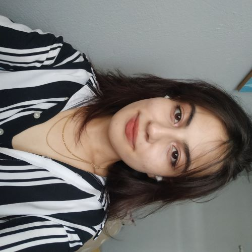

Postagens recentes
Ranking de Músicas do álbum Rockstar
Hoje.
Olá, pessoal, como vão? Hoje, eu escolhi o álbum Rockstar, do Stray Kids, para ordenar as minhas músicas favoritas :) mas eu não tenho nenhum compr...
Seungmin na Paris Fashion Week
Anteontem.
Oi, oi! Como estão, pessoal? Por aqui não está nada bem... Por quê vestiram o Seungmin de Grinch?
Autora do Arcos e Flechas
Olá!
Eu sou a Melissa, tenho 20 anos, sou Designer e estudante de Tecnologia. Eu gosto muito de cultura popular e história.
Essa sou eu!